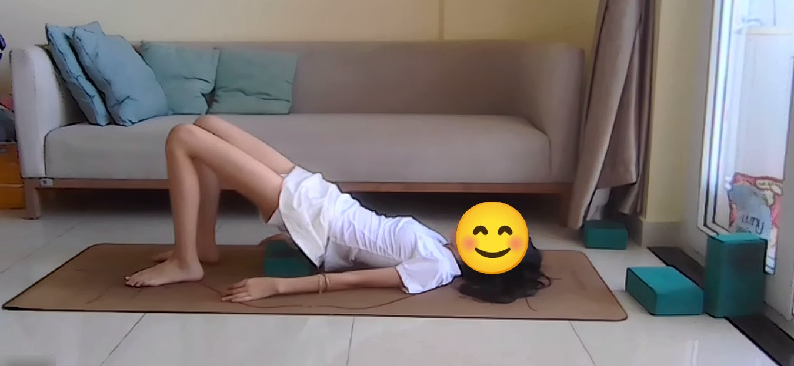
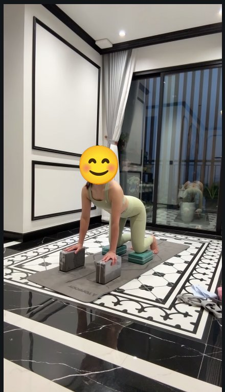

Yoga người lớn · Sức khỏe phụ nữ trung niên
Ứng dụng yoga cân bằng phục hồi cho phụ nữ són tiểu, sàn chậu yếu
Ho một cái. Hắt hơi một cái. Cười to với bạn. Rồi khẽ khép chân lại, mong không ai để ý. Rất nhiều phụ nữ đã sống như vậy nhiều năm mà không kể với ai, kể cả bác sĩ.
Chị bốn mươi tám tuổi, hai con, bán hàng ở chợ. Chị đến lớp vì đau vai gáy. Mãi tới buổi thứ năm, khi cả lớp đã về, chị mới nói nhỏ chuyện khác.
“Cô ơi, em không dám nhảy dây với con nữa. Ho mạnh là ướt. Trong túi lúc nào cũng có miếng lót. Em tưởng đẻ hai đứa thì ai cũng thế.”
Cô hỏi chị đã bao giờ thử tìm xem cơ sàn chậu của mình ở đâu chưa. Chị lắc đầu. Chưa ai từng chỉ cho chị.
Hôm đó cô không dạy tư thế nào. Hai cô trò chỉ ngồi trên ghế, thở, và tìm một nhóm cơ nhỏ mà chị đã quên mất suốt mười lăm năm.
Câu chuyện được kể lại từ nhiều học viên có cùng vấn đề, đã đổi chi tiết để giữ riêng tư.
Són tiểu rất phổ biến ở phụ nữ, nhất là sau sinh con và quanh tuổi mãn kinh. Nó không nguy hiểm tới tính mạng, nên hay bị gạt đi. Nhưng nó lấy đi nhiều thứ lắm: chuyến đi xa, buổi tập thể dục, tiếng cười thoải mái, cả sự tự tin khi gần chồng. Tin vui là són tiểu không phải cái giá bắt buộc của tuổi tác. Ở nhiều chị, cơ sàn chậu có thể khỏe lại, bàng quang có thể học lại thói quen, và lối sống có thể làm triệu chứng nhẹ đi rõ rệt.

- Sàn chậu là gì
- Mình thuộc kiểu nào
- Ba gốc
- Năm thể
- Tìm lại sàn chậu
- Khóa trước khi ho
- Dạy lại bàng quang
- Sáu tư thế
- Chuỗi 12 phút
- Đổi lối sống
- Tám bậc yoga
- Khi nào đi khám
Sàn chậu: cái võng ở đáy cơ thể
Cơ hoành ở trên, sàn chậu ở dưới. Hít vào, cả hai cùng hạ xuống. Thở ra, cả hai cùng nhấc lên. Sàn chậu đỡ bàng quang, tử cung, trực tràng, và giữ cho cửa ra của nước tiểu đóng chặt khi bụng bị ép.
Sàn chậu là một lớp cơ căng ngang đáy khung chậu, từ xương mu phía trước ra tới xương cụt phía sau, giống như một cái võng. Mỗi lần mình ho, hắt hơi, cười, nhấc đồ nặng, áp lực trong bụng đẩy xuống. Một sàn chậu khỏe sẽ tự co lại đúng lúc đó, đóng chặt niệu đạo. Một sàn chậu yếu thì phản ứng chậm hoặc không đủ lực. Vài giọt nước tiểu thoát ra.
Sinh con, nhất là sinh thường con to hoặc chuyển dạ lâu, có thể làm cơ và dây chằng vùng này giãn ra. Mãn kinh làm estrogen giảm, mô vùng kín mỏng và kém đàn hồi hơn. Tăng cân, táo bón lâu ngày, ho kéo dài, bê vác nặng thường xuyên, tất cả đều ép lên cái võng ấy mỗi ngày.
Mình thuộc kiểu són tiểu nào
Có hai kiểu chính, cách chăm sóc hơi khác nhau. Nhiều chị có cả hai. Tích vào những ô đúng với mình.
Ba gốc của yoga cân bằng phục hồi
- 🌬️Hơi thở là gốc. Cơ hoành và sàn chậu là một đôi. Người thở ngực, thở gấp thì sàn chậu cũng gần như đứng yên. Thở bụng sâu là bước đầu tiên để cái võng được chuyển động trở lại.
- 🌿Cột sống là trọng tâm. Ngồi sụp, lưng tròn thì áp lực bụng dồn thẳng xuống sàn chậu. Lưng dài, xương chậu cân, áp lực được chia đều hơn.
- ⚖️Cân bằng là hướng đi. Sàn chậu cần biết siết, nhưng cũng cần biết thả. Có những chị không phải yếu, mà là căng cứng, gồng suốt ngày. Mình tìm lại thế cân giữa co và buông.
Yoga không vá lại được một dây chằng đã rách, cũng không thay được phẫu thuật khi bác sĩ thấy cần. Nhưng ở phần lớn các chị bị nhẹ và vừa, việc thở đúng, tập sàn chậu đều, dạy lại bàng quang và đổi vài thói quen có thể làm són tiểu bớt đi rất nhiều. Cơ thể có khả năng tự cân bằng. Mình chỉ cần chỉ cho nó đường về.
Són tiểu trên cả năm thể
Yoga nhìn con người qua năm lớp (bài Năm thể của con người kể kỹ hơn). Chuyện són tiểu chạm vào cả năm lớp ấy.
Thân
Sàn chậu giãn sau sinh, estrogen giảm, tăng cân, táo bón, ho kéo dài.
Khí
Thở ngực, thở gấp, nín thở khi bê đồ. Cơ hoành và sàn chậu không còn đi cùng nhau.
Tâm
Xấu hổ, ngại. Lo lắng làm bàng quang càng “nhạy”, càng hay mót.
Trí
“Đẻ rồi ai chả thế.” Nghĩ vậy nên không tìm hiểu, không đi khám.
Tinh thần
Thu mình lại, bỏ những niềm vui nhỏ. Quên rằng cơ thể mình vẫn có thể học lại.
Tìm lại sàn chậu của mình
Ngồi trên ghế cứng, hai bàn chân chạm đất, lưng dài. Tưởng tượng mình đang nhịn trung tiện, đồng thời nhịn tiểu. Cảm giác thắt lại và nhấc nhẹ lên trong ấy chính là sàn chậu. Mông không siết, đùi không kẹp, bụng không gồng, không nín thở. Chỉ một nhóm cơ nhỏ ở dưới cùng.
Rồi thả ra. Thả hết. Cảm nhận vùng đáy chậu chạm nhẹ xuống mặt ghế. Phần thả quan trọng không kém phần siết.
Cô không khuyên các chị tập bằng cách ngắt dòng nước tiểu khi đang đi vệ sinh. Làm một lần để nhận ra cơ thì được, nhưng làm thường xuyên có thể làm bàng quang không xả hết.
Đồng hồ dưới đây đi theo nhịp siết chậm: thở ra, siết và nhấc lên, giữ năm nhịp; hít vào, thả hoàn toàn mười nhịp. Ban đầu giữ được hai ba nhịp cũng tốt, cứ thế tăng dần.
Ngoài nhịp chậm, tập thêm vài lần siết nhanh: siết một nhịp, thả một nhịp, mười lần. Nhịp nhanh giúp sàn chậu phản ứng kịp khi mình ho, hắt hơi.
Tập sàn chậu có bằng chứng mạnh. Tổng quan Cochrane trên 31 thử nghiệm cho thấy phụ nữ bị són tiểu khi gắng sức tập cơ sàn chậu thì khả năng hết són cao gấp khoảng tám lần so với không tập (Dumoulin và cộng sự, Cochrane Database of Systematic Reviews 2018). Đây là lựa chọn đầu tiên được các hướng dẫn y khoa khuyên dùng.
Khóa trước khi ho
Đây là một mẹo nhỏ mà cô thấy các chị thích nhất, vì dùng được ngay hôm nay. Khi biết mình sắp ho, hắt hơi, sắp nhấc đồ nặng, hãy siết và nhấc sàn chậu lên trước một nhịp. Giữ nó trong lúc ho. Rồi thả.
Lúc đầu phải nhớ mới làm được. Sau vài tuần, nhiều chị thấy cơ thể tự làm.
Mẹo nhỏ, hiệu quả thật. Ở Đại học Michigan, phụ nữ són tiểu nhẹ khi gắng sức được dạy siết sàn chậu ngay trước khi ho. Chỉ sau một tuần, lượng nước tiểu rỉ ra khi ho vừa giảm khoảng 98%, khi ho mạnh giảm khoảng 73% (Miller và cộng sự, Journal of the American Geriatrics Society 1998).
Dạy lại bàng quang
Với kiểu mót gấp, bàng quang đã quen “kêu” sớm. Nhiều chị lại đi tiểu “phòng xa” liên tục, nên bàng quang càng quen chứa ít. Mình dạy lại nó từ từ, giống như dạy một đứa trẻ biết chờ.
Khi cơn mót gấp đến, đừng chạy ngay. Đứng yên hoặc ngồi xuống. Siết nhanh sàn chậu vài lần. Thở ra thật dài ba hơi. Đợi cơn mót lắng xuống rồi mới bình thản đi vệ sinh.
Lịch đi tiểu tập giãn dần
Mục tiêu dần dần là khoảng ba, bốn tiếng một lần ban ngày. Ban đêm thì cứ đi khi tỉnh dậy vì mót.
Sáu tư thế đơn giản, đúng chỗ
Cô chọn những tư thế để sàn chậu được co và thả theo hơi thở, cơ mông và đùi trong khỏe lên để làm bạn với sàn chậu, và xương chậu được cân lại. Không cần dẻo, không cần mạnh.
Thở bụng nằm co gối
Hơi thở cơ hoành 2 phút
Nằm ngửa, co gối. Hít vào, bụng và đáy chậu cùng mềm xuống. Thở ra, mọi thứ nhẹ nhàng nhấc về.
Cây cầu thấp
Setu Bandhasana nhẹ 2 phút
Thở ra, siết nhẹ sàn chậu rồi nâng hông lên một gang tay. Hít vào, hạ xuống từng đốt sống, thả sàn chậu.
Cầu kẹp gối
Kẹp một cái gối mềm giữa hai gối chân 2 phút
Nằm co gối, kẹp gối mềm. Thở ra, ép nhẹ hai gối vào nhau và nhấc sàn chậu. Hít vào, thả. Đùi trong làm bạn với sàn chậu.
Mèo bò
Marjaryasana, Bitilasana 2 phút
Thở ra, lưng cong lên, sàn chậu nhấc nhẹ. Hít vào, lưng võng xuống mềm, sàn chậu thả. Chậm và đều.
Con bướm
Baddha Konasana 2 phút
Ngồi trên gối cho hông cao hơn gối chân. Hai lòng bàn chân chạm nhau. Không ấn gối. Thở vào vùng chậu, để nó mềm ra.
Ngồi xổm có đỡ
Malasana trên gạch 1 phút
Ngồi trên viên gạch hoặc ghế đẩu thấp, chân mở rộng. Sàn chậu được thả xuống tự nhiên. Ai đau gối thì ngồi ghế.
| Cô tạm tránh | Vì sao |
|---|---|
| Gập bụng ngồi dậy, nâng hai chân thẳng, giữ plank lâu khi chưa khóa được sàn chậu | Áp lực bụng dồn mạnh xuống sàn chậu yếu. |
| Nhảy, chạy nhảy chào mặt trời nhanh | Lực dội lên sàn chậu lặp đi lặp lại. Quay lại dần khi đã khóa được trước khi nhảy. |
| Nín thở và rặn khi bê đồ, khi tập, khi đi đại tiện | Rặn đẩy sàn chậu xuống. Thở ra khi gắng sức. |
| Siết sàn chậu thật mạnh, giữ thật lâu cả ngày | Cơ mỏi và căng cứng, có khi làm đau vùng chậu. |


Chuỗi 12 phút cho sàn chậu
Tập lúc nào cũng được, miễn là đều mỗi ngày. Đi tiểu trước khi tập. Bấm bắt đầu, nghe tiếng chuông nhỏ thì đổi bước.
Cái võng vững, tiếng cười thoải mái
- Thở bụng nằm co gối Hít vào bụng và đáy chậu mềm xuống. Thở ra dài.
- Siết chậm, thả hết Thở ra siết và nhấc, giữ năm nhịp. Hít vào thả hết.
- Siết nhanh Siết một nhịp, thả một nhịp. Mười lần, nghỉ, lặp lại.
- Cây cầu thấp Thở ra nhấc sàn chậu rồi nâng hông. Hít vào hạ xuống.
- Cầu kẹp gối Thở ra ép nhẹ gối, nhấc sàn chậu. Hít vào thả.
- Mèo bò Thở ra cong lưng, nhấc. Hít vào võng lưng, thả.
- Con bướm ngồi trên gối Lưng dài, thở vào vùng chậu cho mềm ra.
- Nằm nghỉ, chân gác ghế Bắp chân đặt lên mặt ghế. Thả hết, thở ra dài.
Đổi lối sống: phần lớn của việc phục hồi
Nhiều chị nghĩ muốn bớt són thì phải uống ít nước. Thật ra uống quá ít làm nước tiểu đặc, càng kích thích bàng quang. Cái mình đổi là cách uống và những gì uống.
- Uống nướcUống đều trong ngày, mỗi lần vài ngụm, nhiều vào buổi sáng và trưa. Sau 7 giờ tối uống ít lại. Nước tiểu vàng nhạt là vừa.
- Bớt thứ kích thích bàng quangCà phê, trà đặc, nước ngọt có ga, rượu bia, đồ uống nhiều đường. Thử bớt từng thứ một tuần, xem bàng quang mình phản ứng với thứ nào.
- Chống táo bónNhiều rau, khoai, đậu, trái cây, uống đủ nước. Khi đi đại tiện, kê một cái ghế nhỏ dưới chân cho gối cao hơn hông, thở ra, không rặn mạnh.
- Cân nặngVài ký giảm đi là bớt đi một gánh nặng đè lên sàn chậu mỗi ngày.
- Ho kéo dàiHo do thuốc lá, do dị ứng, do viêm họng mãn tính đều ép sàn chậu hàng nghìn lần. Bỏ thuốc lá, đi khám nếu ho lâu.
- Bê vácBê đồ sát người, khuỵu gối, thở ra và nhấc sàn chậu trước khi nâng. Chia nhỏ túi đồ đi chợ.
- Đi bộ, ra nắngĐi bộ mỗi ngày giữ cân, giữ ruột đều, lại không dội mạnh lên sàn chậu như chạy nhảy. Nắng sáng cho giấc ngủ sâu.
- Suy nghĩ và thiềnLo âu làm bàng quang nhạy hơn. Năm phút ngồi yên mỗi ngày, thở ra dài, cho hệ thần kinh dịu xuống.
Tám bậc yoga cho sàn chậu
Yoga cổ điển có tám bậc. Tư thế chỉ là bậc thứ ba.
Giới
Yama
Satya, chân thật: thật với mình rằng mình đang són, thật với bác sĩ. Ahimsa, không làm hại: không trách cơ thể đã sinh ra những đứa con.
Luật
Niyama
Tapas, kiên trì: sàn chậu cần ba tháng tập đều mới thấy rõ. Svadhyaya, tự quan sát: để ý mình són khi nào, sau khi uống gì.
Tư thế
Asana
Vài tư thế nhẹ để sàn chậu co và thả theo hơi thở.
Hơi thở
Pranayama
Thở bụng sâu. Thở ra khi gắng sức, không nín thở rặn.
Thu giác quan
Pratyahara
Khi cơn mót gấp đến, quay vào trong, thở, đợi nó lắng xuống.
Tập trung
Dharana
Đặt sự chú ý vào một nhóm cơ nhỏ mình đã quên lâu.
Thiền
Dhyana
Ngồi yên, quan sát cơ thể mà không phán xét.
Hòa nhập
Samadhi
Một tràng cười thật to mà không phải nghĩ gì. Đôi khi bình an giản dị như vậy.
Satya, chân thật, là giới cô muốn nhắc nhất. Phụ nữ mình giỏi chịu đựng. Chịu đau, chịu mệt, chịu cả chuyện són tiểu mười mấy năm. Nói ra với người thân, với bác sĩ, với cô giáo yoga, không có gì phải ngại. Đó là bước đầu tiên của việc thương lấy mình.
Ai muốn đọc thêm có mục Giới và luật trong yoga.
Nghiên cứu nói gì
Tập sàn chậu là lựa chọn đầu tiên. Tổng quan Cochrane (Dumoulin và cộng sự, 2018) ở trên cho thấy tập cơ sàn chậu giúp nhiều phụ nữ hết hoặc bớt són tiểu, và cải thiện chất lượng sống.
Yoga cho són tiểu mót gấp. Ở Mỹ, 240 phụ nữ từ 45 tuổi bị són tiểu chủ yếu do mót gấp được chia vào lớp yoga có chú trọng sàn chậu hoặc lớp kéo giãn, tăng sức cơ thông thường, mười hai tuần. Cả hai nhóm đều giảm hơn một nửa số lần són tiểu, yoga không hơn hẳn (Huang và cộng sự, Annals of Internal Medicine 2024). Cô đọc kết quả này một cách vui vẻ: vận động đều đặn, có ý thức về cơ thể, là điều có ích, dù mình chọn hình thức nào.
Giảm cân giúp bớt són. Phụ nữ thừa cân bị són tiểu tham gia chương trình giảm cân sáu tháng giảm 47% số lần són tiểu mỗi tuần, so với 28% ở nhóm chỉ được hướng dẫn chung (Subak và cộng sự, New England Journal of Medicine 2009).
Khóa trước khi ho giúp giảm lượng nước tiểu rỉ ra rõ rệt chỉ sau một tuần (Miller và cộng sự, 1998).
Khi nào cần đi khám
Yoga và thay đổi lối sống đi cùng, không thay cho việc khám và chăm sóc của bác sĩ. Đi khám phụ khoa hoặc tiết niệu khi:
- Mất kiểm soát tiểu hoặc đại tiện đột ngột kèm tê vùng mông, yếu chân, đau lưng. Cần đến cấp cứu ngay.
- Tiểu ra máu, tiểu buốt, sốt, đau hông lưng.
- Cảm giác có khối nặng, khối lồi ra ở âm đạo, nhất là khi đứng lâu. Có thể là sa tạng chậu.
- Rỉ nước tiểu liên tục cả ngày lẫn đêm, không theo cơn.
- Tiểu khó, tiểu xong vẫn thấy còn, phải rặn.
- Đau vùng chậu, đau khi quan hệ.
- Tập đều ba tháng mà không đỡ, hoặc són tiểu làm ảnh hưởng nhiều tới cuộc sống.
Bác sĩ có thể giới thiệu chuyên viên vật lý trị liệu sàn chậu, cho thuốc, kem estrogen tại chỗ sau mãn kinh, dụng cụ nâng đỡ, hoặc phẫu thuật khi cần. Yoga và lối sống đi bên cạnh những cách ấy.
Lời nhỏ cuối bài
Ba tháng sau, chị bán hàng ở chợ nhắn cho cô một đoạn video ngắn. Chị đang nhảy dây với cô con gái út ở sân nhà. Không nhảy lâu, chỉ vài chục cái. Cuối video chị cười to, và chị viết: “Không ướt cô ơi.”
Miếng lót vẫn còn trong túi, cho những ngày ho nhiều. Nhưng chị không còn sợ tiếng cười của chính mình nữa.
Thở vào, thả mềm.
Thở ra, nhấc nhẹ. Cái võng nhỏ ấy vẫn đang đỡ mình, mỗi ngày.
🌿 Muốn có người đi cùng trên hành trình phục hồi?
Sophia Yoga có lớp người lớn trực tiếp, lớp Zoom và lớp kèm 1 kèm 1 (500.000đ / giờ), theo hướng yoga cân bằng phục hồi: hơi thở là gốc, cột sống là trọng tâm, tập vừa sức. Chuyện sàn chậu nói riêng với cô sẽ dễ hơn trong buổi kèm riêng. Ai muốn mang yoga đến với các con, có khóa đào tạo HLV Yoga trẻ em.
Đọc thêm cho phụ nữ trung niên: loãng xương · mãn kinh · yoga cho phụ nữ · giảm cân.
Tài liệu tham khảo
- Dumoulin C., Cacciari L.P., Hay-Smith E.J.C. (2018). Pelvic floor muscle training versus no treatment, or inactive control treatments, for urinary incontinence in women. Cochrane Database of Systematic Reviews, CD005654.
- Huang A.J. và cộng sự (2024). Yoga versus physical conditioning for urgency-predominant urinary incontinence in ambulatory women: a randomized trial. Annals of Internal Medicine.
- Subak L.L. và cộng sự (2009). Weight loss to treat urinary incontinence in overweight and obese women. New England Journal of Medicine, 360(5), 481–490.
- Miller J.M., Ashton-Miller J.A., DeLancey J.O. (1998). A pelvic muscle precontraction can reduce cough-related urine loss in selected women with mild SUI. Journal of the American Geriatrics Society, 46(7), 870–874.
- Patañjali. Yoga Sutra, chương II (Yama, Niyama, II.29–45).
Ảnh trong bài là ảnh thật từ các buổi tập của Sophia Yoga, mặt học viên đã được che. Câu chuyện là minh họa, ghép từ nhiều học viên. Bài viết chia sẻ kiến thức và kinh nghiệm tập luyện, không thay cho lời khuyên và chăm sóc của bác sĩ.